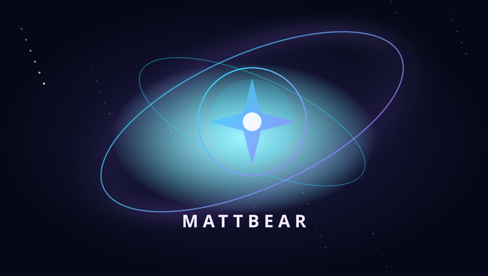

Live sound
Mixing, audio routing, microphone effects and practical broadcast sound checks.

Steal the good ideas. Build better ones.
The Starseedlings production desk: a tight selection of useful Bear Cave tools, tech experiments and creative resources.
Listen to All Fall Down directly on Spotify, or switch to the video station.
Video embed ready. Add the official channel or video URL to connect the player.
Find M@TTB€AR videos ↗The full collection of browser music tools, interactive instruments and creative experiments.
OPEN TOOL ↗PLAYBrowser keyboard and MIDI performance tools for music-making and sound design.
OPEN TOOL ↗MAKE BEATSBuild beats and rhythms in the browser with the M@TTB€AR sequencer.
OPEN TOOL ↗CREATECreate visual promotions and social content with browser-based editing tools.
OPEN TOOL ↗Different stars. Shared sky. Shared success.
Enter the Main Bear Cave ↗Mixing, audio routing, microphone effects and practical broadcast sound checks.
Promos, graphics, readable layouts and clean assets that work on a phone.
Browser synths, drum machines and creative experiments from Bear Cave.
Plan, rehearse, check levels, run the show and archive the best moments.